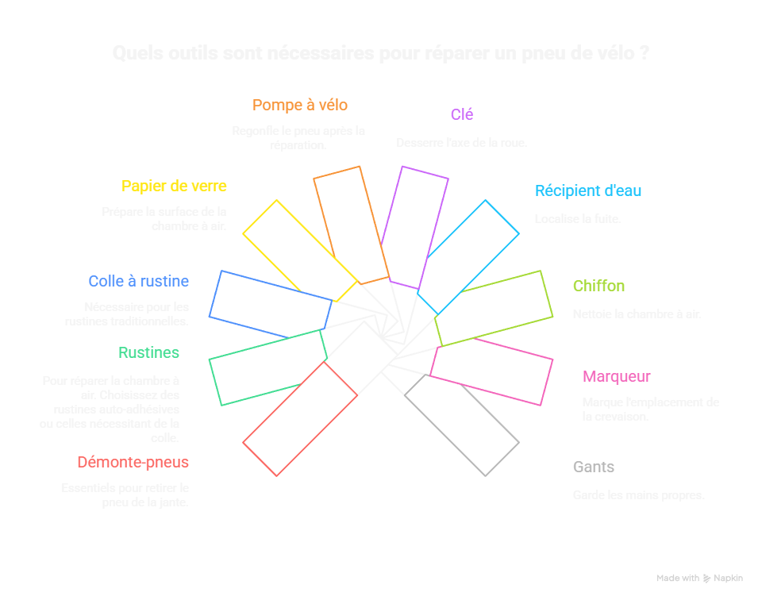
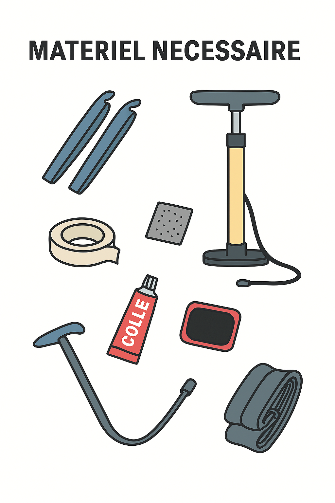
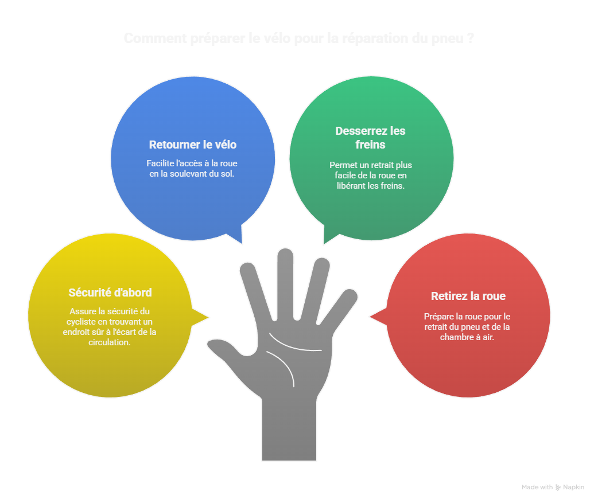
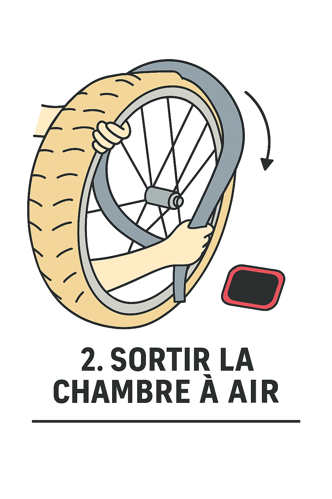
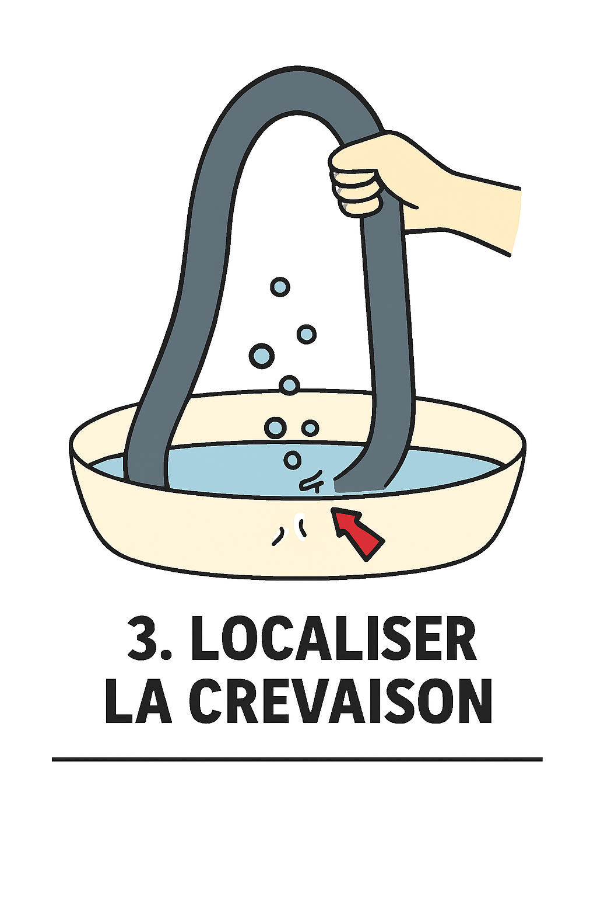
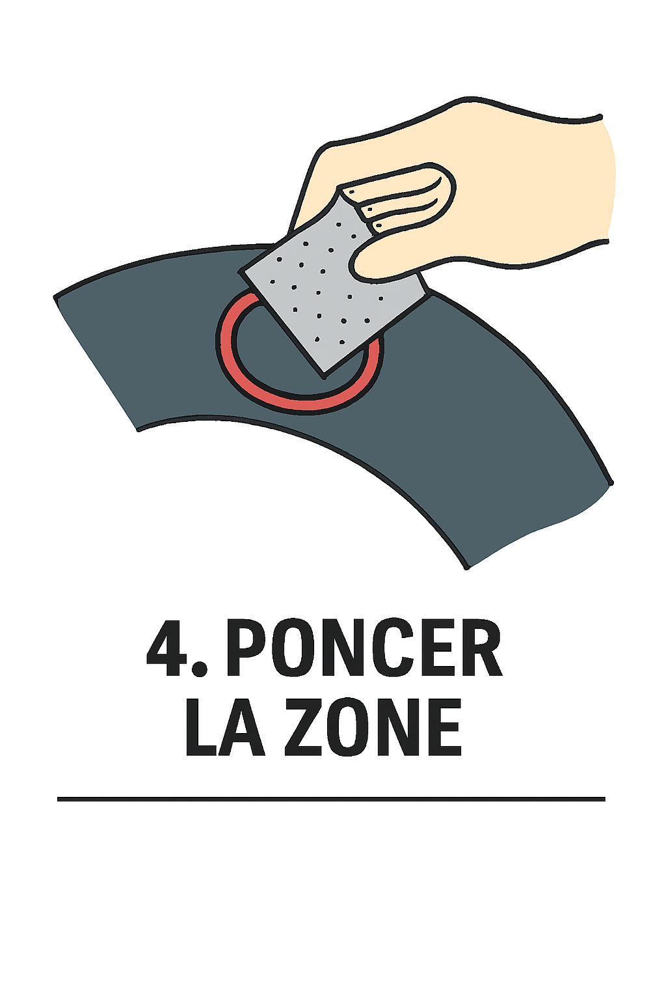
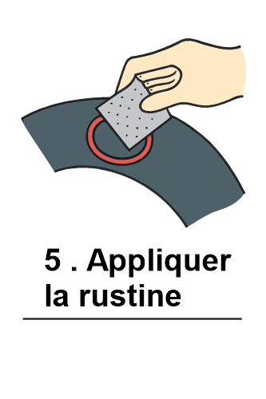
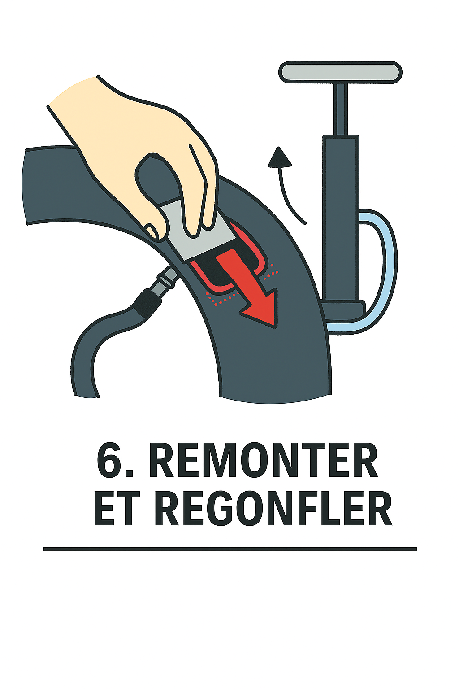

Outils Nécessaires

Preparation : materiels
- Démonte-pneus.
- Rustines.
- Colle spéciale rustine
- Papier de verre ou grattoir
- Pompe à vélo.
- Récipient d'eau.
- Clé (si nécessaire).
- Chiffon.
- Marqueur.
- gants

Étapes de la Réparation

étape 1 : Préparation.
- Sécurité d'abord: Si vous êtes sur la route, trouvez un endroit sûr à l'écart de la circulation.
- Retournez le vélo: Placez le vélo à l'envers, en le posant sur la selle et le guidon. Cela facilite l'accès à la roue.
- Desserrez les freins: Desserrez les freins de la roue concernée pour faciliter le retrait de la roue.
- Retirez la roue: Utilisez la clé appropriée pour desserrer l'axe de la roue et retirez la roue du cadre.
Muni toi de la bonne clef pour les roues si besoins, et aussi une paire de gants pour eviter de te blesser et salir.

étape 2 : Retrait du Pneu et de la Chambre à Air.
- Dégonflez complètement le pneu: Assurez-vous qu'il n'y a plus d'air dans la chambre à air.
- Utilisez les démonte-pneus: Insérez un démonte-pneu entre le pneu et la jante. Accrochez-le à un rayon. Insérez un deuxième démonte-pneu quelques centimètres plus loin et faites-le glisser autour de la jante pour déloger un côté du pneu.
- Retirez complètement un côté du pneu: Une fois un côté du pneu délogé, vous pouvez généralement le retirer complètement à la main.
- Retirez la chambre à air: Sortez la chambre à air de l'intérieur du pneu, en commençant par la valve.
L'operation peut etre salisante selon l'etat de la roue.
Profite en pour verifier l'interieur du pneumatique.
Recherche d'eventuel epine, clou, ou autre objet qui aurait pu provoquer la crevaison.
verifie l'etat general du pneu

étape 3 : Localisation de la Crevaison.
- Inspection visuelle: Examinez attentivement la chambre à air pour repérer le trou.
- est de l'eau (facultatif): Gonflez légèrement la chambre à air et plongez-la dans un récipient d'eau. Les bulles d'air indiqueront l'emplacement de la fuite.
- Repère les bulles ou le sifflement d’air.
- Marque le trou avec un stylo ou un morceau de ruban.
- Inspection du pneu: Une fois la fuite localisée sur la chambre à air, inspectez l'intérieur du pneu à l'endroit correspondant pour identifier la cause de la crevaison (clou, verre, etc.). Retirez l'objet avec précaution.

étape 4 : Préparation de la Chambre à Air.
- Séchage: Si la chambre à air est mouillée, séchez-la avec un chiffon.
- Ponçage: Utilisez le papier de verre ou la râpe pour rendre la surface de la chambre à air rugueuse autour de la crevaison. Cela permettra à la rustine d'adhérer correctement.
- Nettoyage: Nettoyez la zone poncée avec un chiffon pour enlever les résidus.
Etape essentiel de la reparation. à ne surtout pas negliger.

étape 5 : Application de la Rustine.
- Rustines auto-adhésives: Retirez le film protecteur de la rustine et appliquez-la fermement sur la zone préparée. Appuyez pendant quelques minutes pour assurer une bonne adhérence.
- Rustines avec colle: Appliquez une fine couche de colle sur la zone préparée et laissez sécher pendant quelques minutes (suivez les instructions sur le tube de colle). Appliquez ensuite la rustine et appuyez fermement pendant plusieurs minutes.
Avec ce genre de colle, il ne faut pas etre trop presser d'appliquer la rustique.

étape 6 : Remontage du Pneu et de la Chambre à Air.
- Vérifiez l'intérieur du pneu: Assurez-vous qu'il n'y a plus d'objet pointu à l'intérieur du pneu.
- Insérez la chambre à air: Insérez la valve de la chambre à air dans le trou de la jante. Placez ensuite la chambre à air à l'intérieur du pneu, en veillant à ce qu'elle ne soit pas tordue.
- Remontez le pneu sur la jante: Commencez par un côté du pneu, puis utilisez vos pouces pour faire passer l'autre côté par-dessus la jante. Si c'est trop difficile, utilisez les démonte-pneus avec précaution pour ne pas pincer la chambre à air.
- Vérifiez l'alignement du pneu: Assurez-vous que le pneu est correctement positionné sur la jante et qu'il n'y a pas de partie de la chambre à air coincée entre le pneu et la jante.
Pour remettre en place, gonfle legerement la chambre à air.
Fini par la valve.
étape 7 : Gonflage du Pneu.
- Gonflez légèrement: Gonflez légèrement le pneu pour vérifier qu'il est bien positionné sur la jante.
- Gonflez à la pression recommandée: Gonflez le pneu à la pression recommandée (indiquée sur le flanc du pneu).
- Vérifiez l'étanchéité: Vérifiez qu'il n'y a pas de fuite d'air autour de la rustine et de la valve.
étape 8 : Remontage de la Roue.
- Replacez la roue: Replacez la roue dans le cadre du vélo.
- Serrez l'axe: Serrez l'axe de la roue avec la clé appropriée.
- Resserrez les freins: Resserrez les freins.
étape 9 : Test.
- Faites tourner la roue: Faites tourner la roue pour vérifier qu'elle tourne librement et qu'elle n'est pas voilée.
- estez les freins: Testez les freins pour vous assurer qu'ils fonctionnent correctement.
- Faites un court essai: Faites un court essai sur une surface plane pour vous assurer que la réparation est réussie.
Conseils de Prévention
Voici quelques conseils pour réduire le risque de crevaison :
- Vérifiez régulièrement la pression des pneus: Des pneus sous-gonflés sont plus susceptibles de crever.
- Inspectez régulièrement vos pneus: Recherchez les coupures, les fissures et les objets incrustés.
- Évitez les débris sur la route: Essayez d'éviter les zones avec du verre brisé, des clous ou d'autres objets pointus.
- Utilisez des pneus anti-crevaison: Ces pneus sont renforcés pour résister aux crevaisons.
- Installez des fonds de jante de qualité: Ils protègent la chambre à air des rayons et des têtes de vis.
- Soyez attentif à votre environnement: Anticipez les obstacles et adaptez votre conduite.